Flowers Have Been Saying Things This Whole Time
— gardens, petals, and the secret language of what grows —
a special evening edition, transcribed by one person at the kitchen table, who suspects the bouquets were never just decoration.
(i think they were trying to tell us something)
every culture that ever had a garden also had a code for it. a carnation meant one thing, a faded
bloom meant another, a flower handed across a fence could end or begin a whole life. i kept finding
these — in jade, in silk, in oil paint, in dying men's poems — and they're all saying something.
so i clipped them out and laid them next to each other to see if they'd talk.
spoiler: they do.
The Portrait · Exhibit A
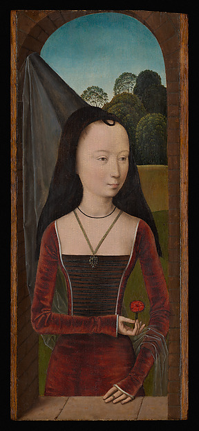
Hans Memling. Young Woman with a Pink, ca. 1485–90. Oil on wood. The Metropolitan Museum of Art · Open Access
she's holding that pink like it's her only answer to something. your eye keeps going back to her hands — to that one small red flower.
“So let us, unobtrusive and unnoticed, but happy none the less, fill the air around us with happiness.”
Verse · filed under hope
Women's Rights
As humble plants by country hedgerows growing,
That treasure up the rain,
And yield in odours, ere the day's declining,
The gift again;
So let us, unobtrusive and unnoticed,
But happy none the less,
Be privileged to fill the air around us
With happiness;
— Annie Louisa Walker · PoetryDB
flowers as a mirror for quiet power — treasuring rain and giving it back as scent. keeping your own light even when nobody's watching.
The Garden · in oils
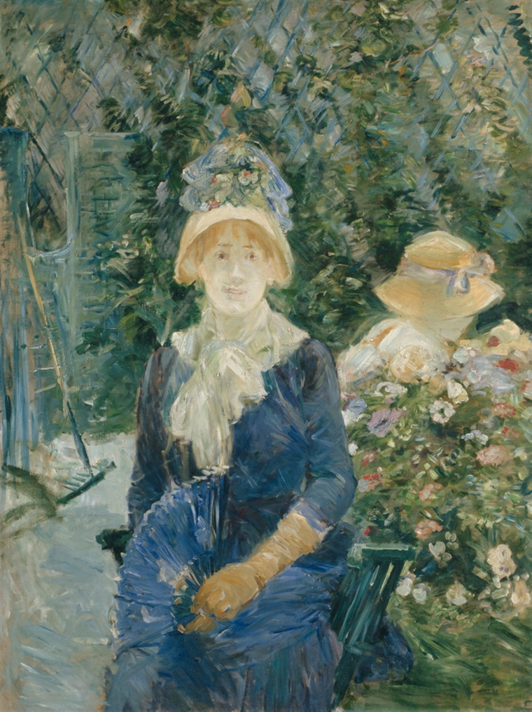
Berthe Morisot (French, 1841–1895). Woman in a Garden, 1882–83. Oil on canvas. Art Institute of Chicago
she's almost floating on the brushstrokes — that exact moment of being lost in thought, the density of flowers becoming a cocoon. you can feel the breeze in the loose paint.
↑ blooming chaos, weight of fabric
Verse · filed under defiant
Confessions
Yet never catch her and me together,
As she left the attic, there,
By the rim of the bottle labelled "Ether,"
And stole from stair to stair
And stood by the rose-wreathed gate. Alas,
We loved, sir--used to meet;
How sad and bad and mad it was--
But then, how it was sweet!
— Robert Browning · PoetryDB
a dying man paints his love in bottle-labels and garden walls, then just says it. all the contradictions at once. "sad and bad and mad — but sweet."
The Jewel · a garden that won't wilt
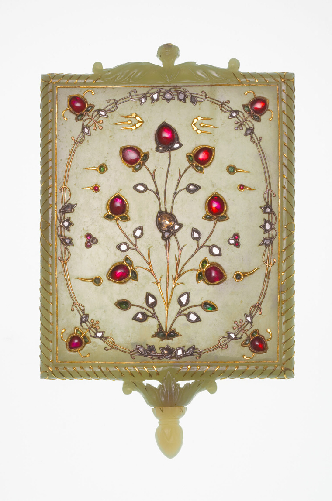
India, Mughal dynasty (1526–1857), 17th/18th century. Nephrite jade, gold, rubies, emeralds, diamonds (kundan). Art Institute of Chicago · CC0
someone polished each gem into ruby droplets, fruit hanging from jade branches. a garden where nothing will ever wilt, nothing will ever fall.
“Sweet daffodils, violets and roses sprang up wherever they wandered.”
Verse · filed under joy ✿
Epithalamium: A Marriage Poem
When Helen and Jonas, so true and so loving,
Along the green lawn were seen arm in arm moving,
Sweet daffodils, violets and roses spontaneous
Wherever they wandered sprang up instantaneous.
— Major Henry Livingston, Jr. · PoetryDB · public domain
flowers spring up where they walk — the world itself blessing them. earnest, uncynical joy. he commits to it completely.
The Garden · where everything breathes green
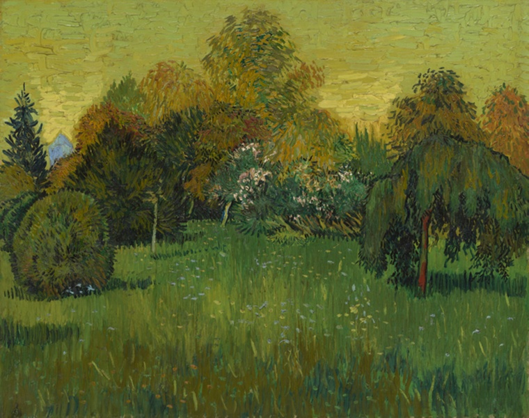
Vincent van Gogh (Dutch, 1853–1890). The Poet's Garden, 1888. Oil on canvas. Art Institute of Chicago
arles, and you can feel how much he loved it — brushstrokes doing the work of wind in the trees, flowers scattered like they can't help blooming. a garden you want to walk into.
The Scroll · restraint as generosity
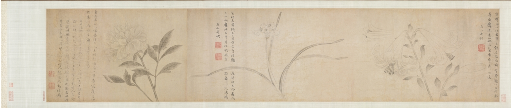
Zhao Zhong (Chinese, 1300s). Ink Flowers, 1361. Handscroll; ink on paper. Cleveland Museum of Art · CC0
these drift across the paper like they're dissolving as you look. so much breathing room. restraint, offered as a kind of generosity.
Verse · filed under remorse
The Faded Flower
And now I bend me o'er thy wither'd bloom,
And drop the tear — as Fancy, at my side,
Deep-sighing, points the fair frail Abra's tomb —
'Like thine, sad Flower, was that poor wanderer's pride!'
— Samuel Coleridge · PoetryDB
that pivot from flower to human, from plant to mortality — standing over the thing he carelessly destroyed. it breaks something open.
The Weave · 144 knots per inch
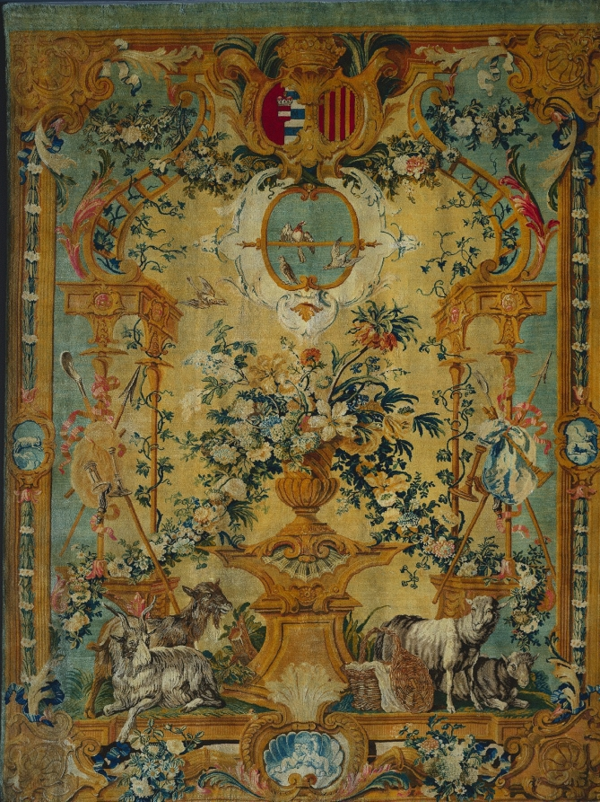
Royal Savonnerie Manufactory, Chaillot Workshops (French, est. 1627). Panel: Spring, c. 1715. Wool and hemp knotted pile. Cleveland Museum of Art
imagine tying 144 individual knots per square inch just to get these flowering branches and wandering goats exactly right. spring, made permanent by someone's hands.
“The whole year on one screen — told with so much air between things.”
The Screen · hope arriving unannounced
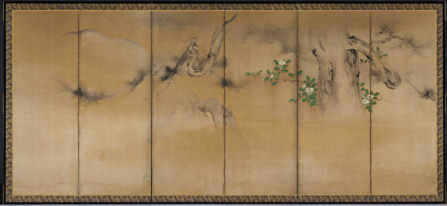
Kaihō Yūshō (Japanese, 1533–1615). Winter and Summer Flowers, c. 1600. Six-panel folding screen; ink, color, gold on paper. Cleveland Museum of Art · CC0
the gold holds these whispered branches like a secret — then those tiny green flowers appear, so small they feel like hope arriving unannounced.
The Cloth · a chant you can see
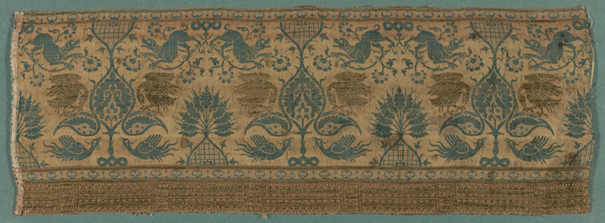
Fragment. Italy, 14th century. Silk & gilt-substrate linen, warp-float twill with brocading wefts. Art Institute of Chicago · CC0
birds and plants in perfect symmetry — greens and golds repeating like a chant you can actually see. they were trying to weave something holy into the cloth.
The Quilt · scattered like wildflowers
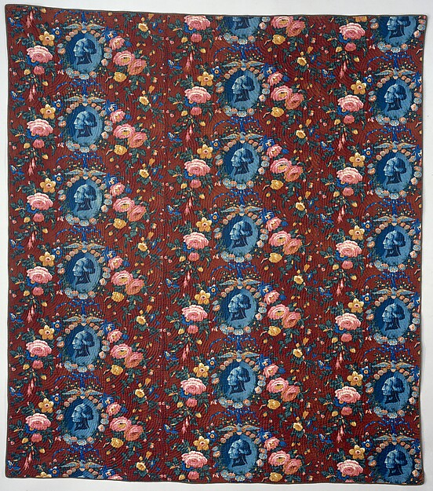
American. George Washington Quilt, about 1876. Wholecloth printed cotton. The Metropolitan Museum of Art · Open Access
someone decided one washington wasn't enough patriotic fervor and scattered him across deep red like wildflowers, roses in between. it's meant to keep you WARM, not just honor a president. i love it so much.
The Furniture · a garden frozen in wood
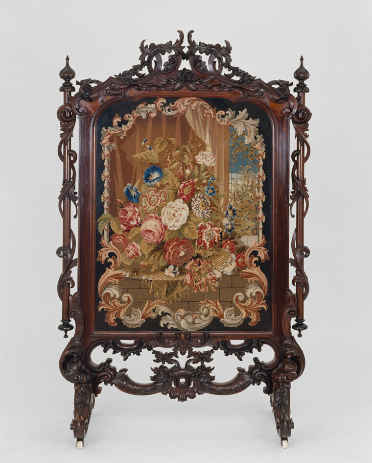
Artist unknown (American, 19th c., New York or Boston). Fire Screen, c. 1855. Rosewood & white pine, needlepoint panel. Art Institute of Chicago
someone stitched a whole bouquet, then bolted it into this absolutely ridiculous gothic frame — dragons, scrollwork everywhere. nature, captured and then dressed in the fanciest furniture-clothes imaginable.
The Rite · flowers fall for devotion
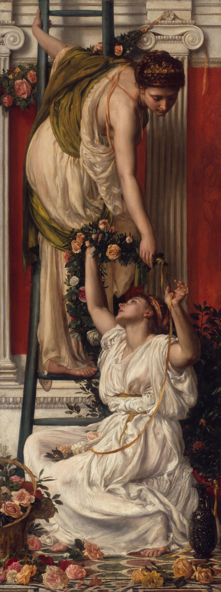
Edward John Poynter (English, 1836–1919). The Festival, 1875. Oil on canvas. Art Institute of Chicago
two women in white, petals drifting, everything slow — the ceremony of it. that moment where everything matters and nothing needs to be rushed.